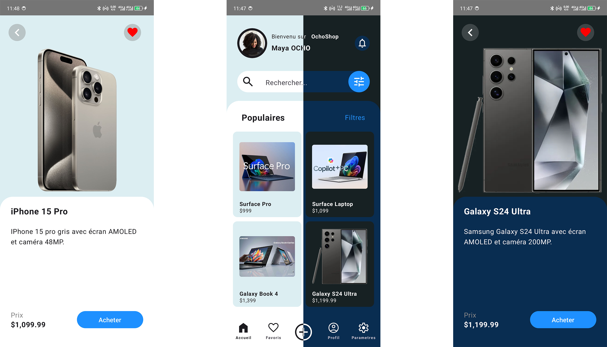
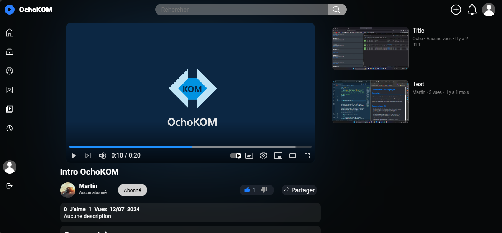

Bienvenue sur mon Portfolio
Je suis Martin OCHO, un développeur passionné par la création d'applications mobiles et de sites web performants. Explorez mon parcours, découvrez mes projets, et n'hésitez pas à me contacter pour toute collaboration.
À propos
Depuis mon plus jeune âge, j'ai été fasciné par la technologie et son potentiel à changer le monde. J'ai commencé ma carrière en tant que développeur web, où j'ai perfectionné mes compétences en PHP, JavaScript, et en utilisant des frameworks comme Next.js et Express.js. Après plusieurs années dans le développement web, j'ai élargi mes compétences au développement mobile en me spécialisant en Kotlin et Jetpack Compose. Aujourd'hui, je combine ces deux univers pour créer des applications et des sites web qui offrent des expériences utilisateur exceptionnelles.
Expérience Professionnelle
- Développeur Mobile et Web, Freelance (2018 - Présent)
- Création d'applications mobiles natives pour Android utilisant Kotlin et Jetpack Compose.
- Développement de sites web dynamiques et performants avec PHP et JavaScript.
- Collaboration avec des clients pour transformer leurs besoins en solutions concrètes.
- Développeur Web, Agence Digitale XYZ (2015 - 2018)
- Développement de sites web sur mesure pour des clients variés en utilisant PHP, MySQL, et JavaScript.
- Implémentation de solutions backend robustes avec Express.js et Node.js.
Éducation
- Master en Informatique, Université de Technologie (2013 - 2015)
- Licence en Informatique, Université de Technologie (2010 - 2013)
Projets
OchoShop - Application Mobile Kotlin
Une application Android pour faire vos achats et vendre vos produits.
- Suivi en temps réel des ventes et achats.
- Plans de promotions.
- Synchronisation des favoris avec un compte Google.

Voir sur GitHub
Ochovid Site de gestion vidéo - PHP & JavaScript
Un site de visionnage complet avec gestion de vidéos, commentaires et likes sur les vidéos.
- Publication et gestion des vidéos.
- Système de commentaires et likes.
- Système d'abonnement à des créateurs de contenu.

Voir sur GitHub
Portfolio Personnel - Next.js & Express.js
Un portfolio interactif pour présenter mes projets, développé avec Next.js pour le front-end et Express.js pour le back-end.
- Interface utilisateur dynamique avec Next.js.
- Backend avec Express.js pour gérer les demandes de contact.
- Hébergement sur Vercel avec déploiement continu.
Voir sur GitHub
Compétences
Développement Mobile
- Kotlin, Android Studio, Jetpack Compose, Gestion de l'état, Animation, Intégration d'API.
Développement Web
- PHP, MySQL, JavaScript (Vanilla, ES6+), HTML, CSS, Next.js, Express.js, Node.js.
Autres Compétences
- Git & GitHub, CI/CD (Jenkins, GitLab CI), Testing (JUnit, Mocha), Design Patterns, Docker.